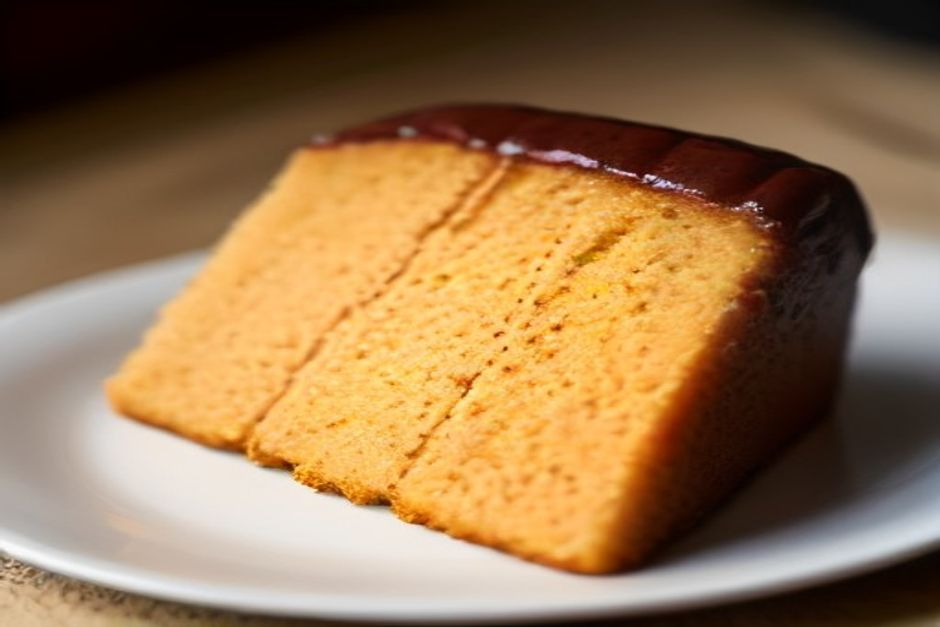
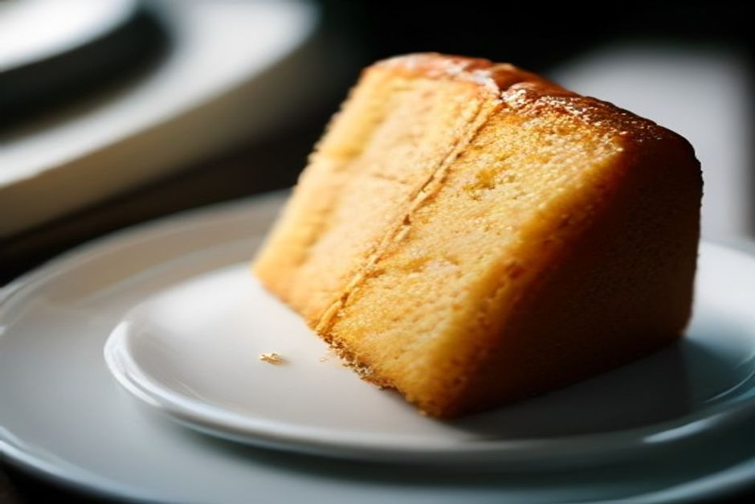

Bolo de mel is Madeira's oldest dessert — a dense, dark, deeply spiced cake bound not with honey but with sugarcane molasses, laced with Madeira wine and candied fruit, and traditionally broken apart by hand rather than cut with a knife. It's the cake most associated with Christmas on the island, yet it's sold and eaten year-round.
What is bolo de mel, exactly?
Bolo de mel is a heavy, moist, almost black-brown cake built around mel de cana — sugarcane molasses — instead of the flour-sugar-butter ratio most cakes rely on. It's enriched with butter and lard, studded with walnuts and candied citrus peel, spiced with cinnamon, clove, nutmeg and aniseed, and finished with a splash of Madeira wine worked into the dough. The result isn't light or fluffy in the way most people picture "cake" — it's dense, chewy at the edges, intensely flavoured, and closer in spirit to a fruitcake or spice loaf than to sponge cake.

Does bolo de mel actually contain honey?
No, not in the traditional recipe. "Mel" translates literally to "honey," which trips up plenty of visitors, but the cake is built on mel de cana — sugarcane molasses, a byproduct of the sugar-refining process that once made Madeira one of the wealthiest sugar-producing islands in the world. Molasses gives the cake its near-black colour, its dense, sticky crumb, and a deeper, slightly bitter sweetness that bee honey wouldn't produce. Some modern bakers blend in a little real honey for extra moisture, but it's mel de cana doing the real work.
How old is bolo de mel, and where does it come from?
It dates back to the 15th century, making it Madeira's oldest known dessert. The recipe took shape at a time when the island was among the largest sugarcane producers on earth, and spices reaching Madeira through Portugal's trade routes with India and the East gave local bakers cinnamon, clove and nutmeg to work with. Nuns at Funchal's Convent of Santa Clara are widely credited among the cake's earliest makers, which puts bolo de mel in the same convent-kitchen tradition as many of Portugal's classic sweets.
Why don't Madeirans cut bolo de mel with a knife?
Because tradition says the metal changes its flavour, so the cake is torn into pieces by hand instead of sliced. It's a custom passed down through generations and taken seriously across the island — offering someone a piece of bolo de mel torn straight from the loaf is part of the ritual, not a shortcut around not owning a cake knife. Locals will tell you it's meant to symbolise sharing and hospitality as much as it protects the flavour, and either way, it's the version of the tradition that has survived.
When is it made, and why does it last for months?
Bolo de mel is traditionally baked on 8 December, the feast of the Immaculate Conception, and folklore holds that a cake is only "properly" a Christmas one if it's made on that exact day. What makes the tradition work logistically is the cake's shelf life — the dense, molasses-heavy dough keeps well for months without refrigeration, wrapped and stored, which is exactly why a cake baked in early December is still being shared and eaten well into the new year. That same longevity is why bakeries sell it across all twelve months, not only in the run-up to Christmas.

Where can you find good bolo de mel in Madeira?
Bakeries and pastry counters across Funchal carry it year-round, usually wrapped tight in small, gift-sized rounds since a couple of slices go a long way. The stalls inside the Mercado dos Lavradores sell it alongside other island specialities, and it's one of the easiest local foods to bring home, since it travels and keeps far better than anything fresh. It also happens to make a good addition to a day on the water — dense, doesn't spoil in the sun, and pairs naturally with a glass of Madeira wine, which is exactly the kind of small local touch we like to keep on board a private boat trip with Chifbay out of Funchal.
It looks like a fruitcake, tastes like six centuries of sugar money and Christmas spice, and isn't supposed to meet a knife.
Bolo de mel won't win over anyone looking for something light — it isn't trying to. It's Madeira's oldest dessert precisely because it was built to last: through a ship's hold, a Madeira winter, or a slow afternoon shared out by hand.